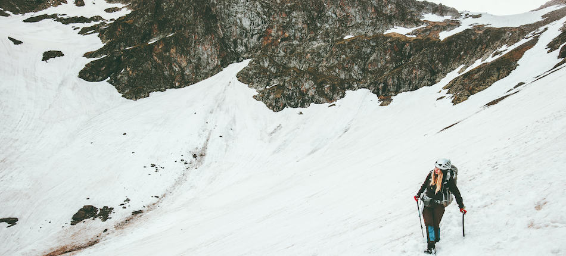
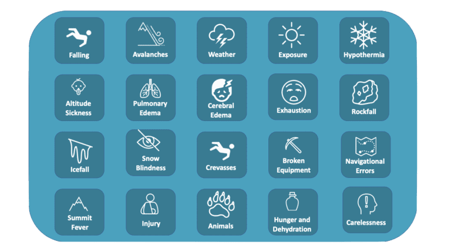
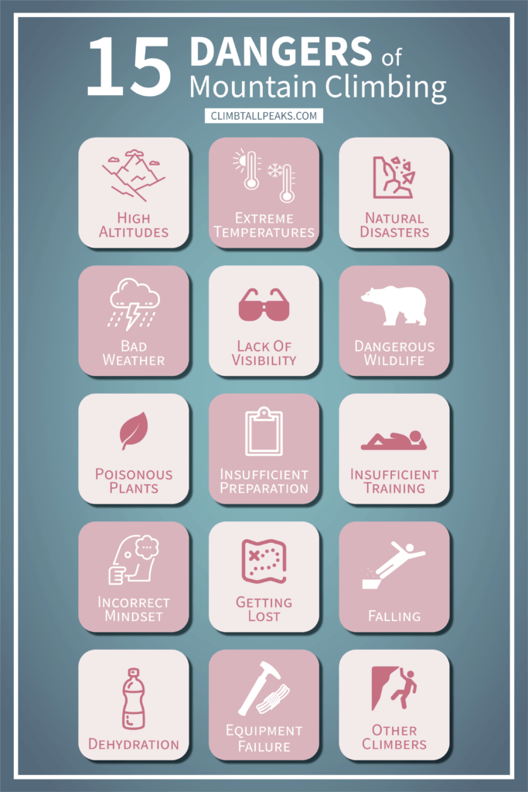
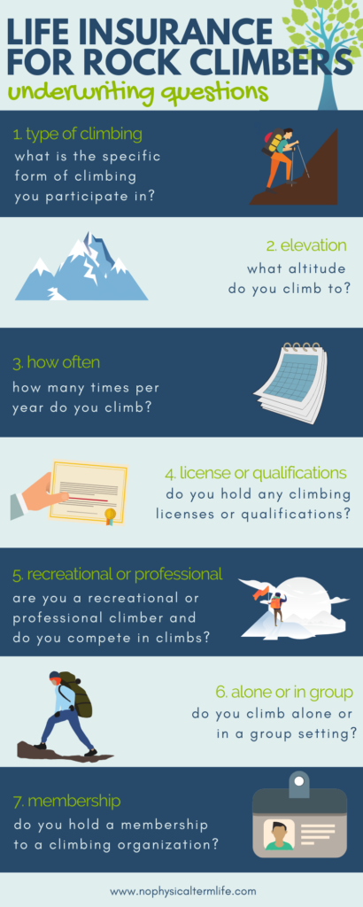

Mountaineering Hazards
- Home
- Hazards

Mountain climbing is an inherently dangerous activity, and you need to be aware of the dangers before you go out.
So, what are the main risks in mountain climbing? Falling, avalanche danger, exposure to the elements, and altitude sickness are among the most prevalent risks that you’ll face while mountaineering, although that’s far from a comprehensive list.
There’s a whole host of mountain climbing risks that you’ll have to face if you decide to take up this sport. Some of them (like falling and exhaustion) you’ll have to content with every time you go mountain climbing, while others (like altitude sickness) will only become relevant once you start pushing the boundaries on some of the hardest mountains in the world. Now, this article isn’t meant to dissuade you from mountain climbing (I do it all the time, and I love it), but rather to make you aware of the dangers so that you can plan for them!

Even though I’ve spent most of my life climbing mountains, I still don’t think that I was able to create a fully comprehensive list including all of the dangers that you’ll face. With that being said, though, I have 20 main ones that you should be planning for:
Falling: Maybe the most common danger, and one that almost everyone is afraid of.
Avalanches: Avalanches can hit you at any time, and even the best mountaineers in the world sometimes succumb to them.
Weather: Weather patterns in the mountains change quickly, and you can find yourself stuck if the conditions suddenly turn.
Exposure: Spending tens of hours in the beating sun or freezing cold can start to mess with your body and brain (I recently dropped a rappel device due to heat stroke).
Hypothermia: Spending too long in the cold will cause your body to start to shut down.
Altitude sickness: Not getting enough oxygen to your brain can muddle your thinking and cause fever-like symptoms
Pulmonary Edema: A specific type of altitude sickness where blood builds up in your lungs.
Cerebral Edema: An even worse form of altitude sickness, where blood builds up in your brain.
Exhaustion: Tiring yourself out can lead to poor decision making, falls, and injuries
Rockfall: Due to erosion and temperature change, chunks of rock will come loose. Once hit from these could easily kill you.
Icefall: Similar to above, except this time with ice.
Snow blindness: When the sun reflects off the snow, it sometimes becomes so bright that it causes temporary loss of eyesight.
Crevasses: Cracks in glaciers that can be up to hundreds of feet deep. A fall into one of these can be life-ending.
Broken equipment: Although this rarely happens, it can leave you stranded when it does.
Navigational errors: If you end up in the wrong place while mountain climbing, your situation could turn out a lot more dangers than you planned.
Summit Fever: Becoming obsessed with your goal can lead to poor decision making, accidents, and exhaustion.
Injury: Whether it’s a twisted ankle, a broken bone, or a concussion, unforeseen injuries can strand you while mountain climbing.
Animals: Wild animals like bears, cougars, and wolves need to be taken into account when climbing mountains.
Hunger and Dehydration: Not giving your body enough fuel to operate on can wear you down.
Carelessness: Becoming overconfident or over relaxed is a death sentence while mountain climbing (especially if combined with any of the other factors.
As you can see, there’s a long list of risks to be aware of while mountain climbing. Knowing about them is important — but knowing how to avoid them is even more so.

